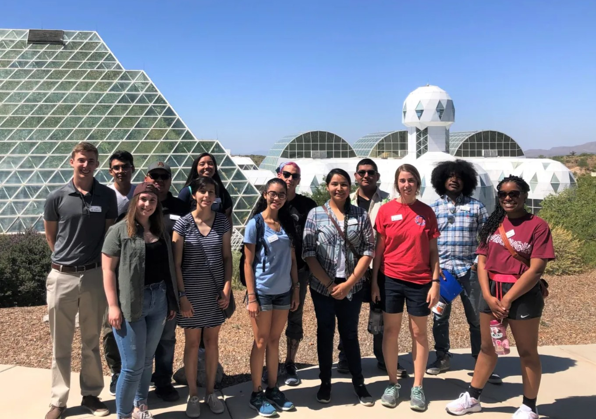
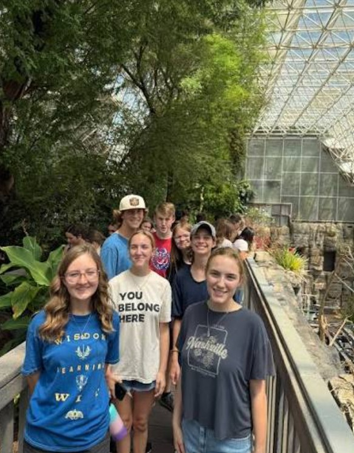

Internships
Work alongside Biosphere 2 faculty members across a variety of science research topics and public education programs. We accept undergraduate students every semester to take part in the research happening at Biosphere 2.
Your first-hand look into what's happening inside Biosphere 2 — and how your contribution and curiosity make a difference. Each month we share exclusive content about the research, people, and research systems that make up our facility.

Discover the ways you can support our mission by getting involved at Biosphere 2. Any type of contribution goes a long way in conducting groundbreaking research to improve our planet and our quality of life. Whether you're a student ready to intern, someone eager to support our research through a charitable gift, or a community member looking for a team to join, we need you.

Inside the CommunityBiosphere 2's research doesn't happen in isolation. It depends on undergraduate interns who help run experiments semester by semester, on donors who fund the next-generation coral reef tank, on employees who keep the technosphere running, and on community partners who extend our reach into schools, tribes, and conservation groups across the Southwest.
Choose a pathway below to learn how you fit in.
Work alongside Biosphere 2 faculty members across a variety of science research topics and public education programs. We accept undergraduate students every semester to take part in the research happening at Biosphere 2.
Your contribution can change the world. By donating, you help us conduct groundbreaking climate research and answer questions that help us preserve our environment for ourselves and future generations.
Be a part of something big every day. Our career opportunities are a chance to enrich and develop your passion for the environment while supporting integral climate change research.
Since our inception, Biosphere 2 has been driven by the frontier of what's possible for humanity. Today, we work across scientific disciplines to answer some of the most complex questions about our world — to better preserve and improve the quality of life for all. Your donation not only helps us conduct critical research, but also allows us to extend our knowledge to others through public outreach and education.
Donations to Biosphere 2 flow through the University of Arizona Foundation, a 501(c)(3) nonprofit organization, and are tax-deductible to the extent allowed by law. Use the official Donate Now page on biosphere2.org to make a gift — the tiers below describe where your contribution lands.
Your donation supports the future of our planet. With your contribution, we can continue to operate as a public education organization, fueling climate change research and inspiring the next generation.
There are five major types of biomes in the world and Biosphere 2 contains four of them. From our Rain Forest to our Desert, each system gives us one of the most unique research opportunities in the world and supports our exploration of extremely complex topics.
Our ocean system is undergoing a revitalization process to become a coral reef tank dedicated to the diverse physical environments of the ocean. This will give marine researchers what they need to make critical strides toward helping coral reefs world-wide survive.
Biosphere 2 is dedicated to guiding the next generation of researchers. We provide some of the world's most unique research opportunities, allowing undergraduate students to nurture their curiosity, gain hands-on experience, and get inspired about their future.
Supporting Biosphere 2 research today is one of the most direct ways to help our world adapt to climate change tomorrow. Every gift, large or small, moves an experiment forward.